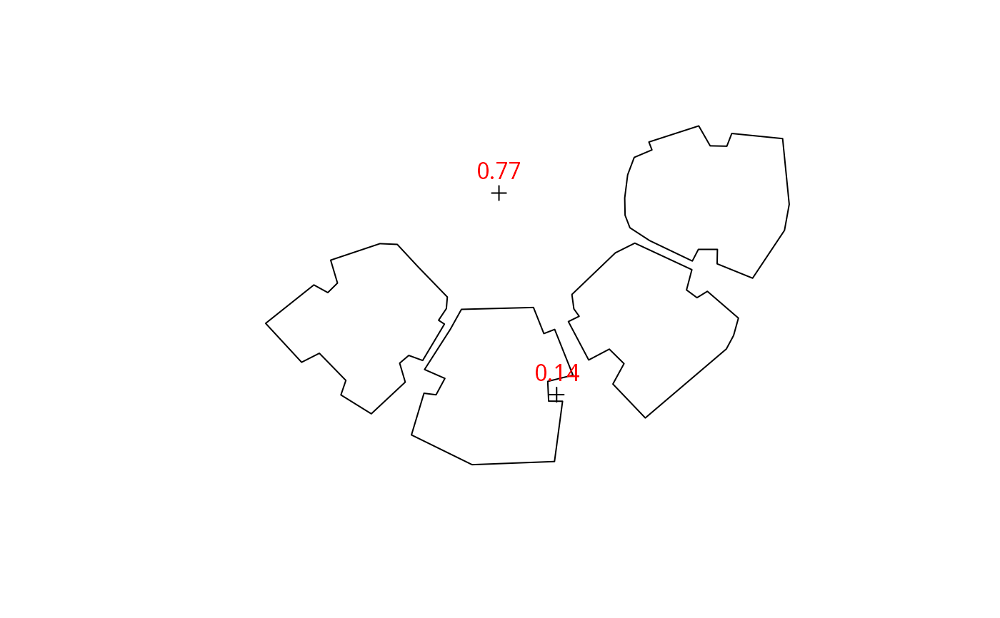

Calculates the Sky View Factor (SVF) at given points or complete grid (location), taking into account obstacles outline (obstacles) given by a polygonal layer with a height attribute (obstacles_height_field).
A SpatialPoints* or Raster* object, specifying the location(s) for which to calculate logical shadow values. If location is SpatialPoints*, then it can have 2 or 3 dimensions. A 2D SpatialPoints* is considered as a point(s) on the ground, i.e. 3D point(s) where \(z=0\). In a 3D SpatialPoints* the 3rd dimension is assumed to be elevation above ground \(z\) (in CRS units). Raster* cells are considered as ground locations
A SpatialPolygonsDataFrame object specifying the obstacles outline
Name of attribute in obstacles with extrusion height for each feature
Circular sampling resolution, in decimal degrees. Default is 5 degrees, i.e. 0, 5, 10... 355.
Buffer size when joining intersection points with building outlines, to determine intersection height
Number of parallel processes or a predefined socket cluster. With parallel=1 uses ordinary, non-parallel processing. Parallel processing is done with the parallel package
A numeric value between 0 (sky completely obstructed) and 1 (sky completely visible).
If input location is a SpatialPoints*, then returned object is a vector where each element representing the SVF for each point in location
If input location is a Raster*, then returned object is a RasterLayer where cell values express SVF for each ground location
SVF calculation for each view direction follows the following equation - $$1 - (sin(\beta))^2$$ Where \(\beta\) is the highest elevation angle (see equation 3 in Gal & Unger 2014).
Erell, E., Pearlmutter, D., & Williamson, T. (2012). Urban microclimate: designing the spaces between buildings. Routledge.
Gal, T., & Unger, J. (2014). A new software tool for SVF calculations using building and tree-crown databases. Urban Climate, 10, 594-606.
## Individual locations
# location0 = rgeos::gCentroid(build)
location0 = as(sf::st_centroid(sf::st_union(sf::st_geometry(sf::st_as_sf(build)))), "Spatial")
location1 = raster::shift(location0, 0, -15)
location2 = raster::shift(location0, -10, 20)
locations = rbind(location1, location2)
svfs = SVF(
location = locations,
obstacles = build,
obstacles_height_field = "BLDG_HT"
)
plot(build)
plot(locations, add = TRUE)
raster::text(locations, round(svfs, 2), col = "red", pos = 3)

if (FALSE) { # \dontrun{
## Grid
ext = as(raster::extent(build), "SpatialPolygons")
r = raster::raster(ext, res = 5)
proj4string(r) = proj4string(build)
pnt = raster::rasterToPoints(r, spatial = TRUE)
svfs = SVF(
location = r,
obstacles = build,
obstacles_height_field = "BLDG_HT",
parallel = 3
)
plot(svfs, col = grey(seq(0.9, 0.2, -0.01)))
raster::contour(svfs, add = TRUE)
plot(build, add = TRUE, border = "red")
## 3D points
# ctr = rgeos::gCentroid(build)
ctr = as(sf::st_centroid(sf::st_union(sf::st_geometry(sf::st_as_sf(build)))), "Spatial")
heights = seq(0, 28, 1)
loc3d = data.frame(
x = coordinates(ctr)[, 1],
y = coordinates(ctr)[, 2],
z = heights
)
coordinates(loc3d) = ~ x + y + z
proj4string(loc3d) = proj4string(build)
svfs = SVF(
location = loc3d,
obstacles = build,
obstacles_height_field = "BLDG_HT",
parallel = 3
)
plot(heights, svfs, type = "b", xlab = "Elevation (m)", ylab = "SVF", ylim = c(0, 1))
abline(v = build$BLDG_HT, col = "red")
## Example from Erell et al. 2012 (p. 19 Fig. 1.2)
# Geometry
# pol1 = rgeos::readWKT("POLYGON ((0 100, 1 100, 1 0, 0 0, 0 100))")
pol1 = as(sf::st_as_sfc("POLYGON ((0 100, 1 100, 1 0, 0 0, 0 100))"), "Spatial")
# pol2 = rgeos::readWKT("POLYGON ((2 100, 3 100, 3 0, 2 0, 2 100))")
pol2 = as(sf::st_as_sfc("POLYGON ((2 100, 3 100, 3 0, 2 0, 2 100))"), "Spatial")
pol = sp::rbind.SpatialPolygons(pol1, pol2, makeUniqueIDs = TRUE)
pol = sp::SpatialPolygonsDataFrame(pol, data.frame(h = c(1, 1)), match.ID = FALSE)
# pnt = rgeos::readWKT("POINT (1.5 50)")
pnt = as(sf::st_as_sfc("POINT (1.5 50)"), "Spatial")
plot(pol, col = "grey", xlim = c(0, 3), ylim = c(45, 55))
plot(pnt, add = TRUE, col = "red")
# Fig. 1.2 reproduction
h = seq(0, 2, 0.1)
svf = rep(NA, length(h))
for(i in 1:length(h)) {
pol$h = h[i]
svf[i] = SVF(location = pnt, obstacles = pol, obstacles_height_field = "h", res_angle = 1)
}
plot(h, svf, type = "b", ylim = c(0, 1))
# Comparison with SVF values from the book
test = c(1, 0.9805806757, 0.9284766909, 0.8574929257, 0.7808688094,
0.7071067812, 0.6401843997, 0.5812381937, 0.52999894, 0.4856429312,
0.4472135955, 0.4138029443, 0.3846153846, 0.3589790793, 0.336336397,
0.316227766, 0.2982749931, 0.282166324, 0.2676438638, 0.2544932993,
0.242535625)
range(test - svf)
} # }